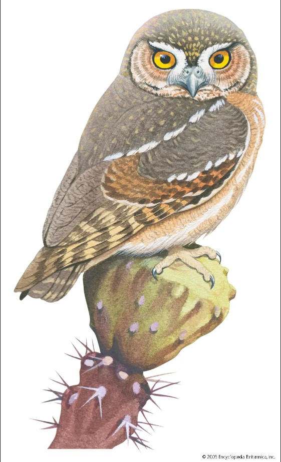
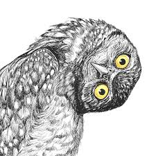
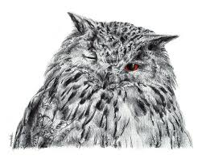

13 Fun Facts About Owls
Unravel a bit of the mystery shrouding these amazing birds of prey.



I very like owls ;-)
Many owl species have asymmetrical ears.
When located at different heights on the owl’s head, their ears are able to pinpoint the location of sounds in multiple dimensions.
Ready, aim, strike.
The eyes of an owl are not true “eyeballs.”
Their tube-shaped eyes are completely immobile, providing binocular vision which fully focuses on their prey and boosts depth perception.
Owls can rotate their necks 270 degrees.
A blood-pooling system collects blood to power their brains and eyes when neck movement cuts off circulation.
A group of owls is called a parliament. This originates from C.S. Lewis’ description of a meeting of owls in The Chronicles of Narnia.
Owls hunt other owls. Great Horned Owls are the top predator of the smaller Barred Owl.
The tiniest owl in the world is the Elf Owl, which is 5 - 6 inches tall and weighs about 1 ½ ounces.
The largest North American owl, in appearance, is the Great Gray Owl, which is up to 32 inches tall.
The Northern Hawk Owl can detect—primarily by sight—a vole to eat up to a half a mile away.
In fat years when mice are plentiful, usually monogamous Boreal Owls are apt to be promiscuous.
Because easy prey means less work for parents feeding their young, males have been caught mating with up to three females, while females have been seen with at least one beau on the side.
Barn Owls swallow their prey whole—skin, bones, and all—and they eat up to 1,000 mice each year.
Northern Saw-whet Owls can travel long distances over large bodies of water.
One showed up 70 miles from shore near Montauk, New York.
Owls are zygodactyl, which means their feet have two forward-facing toes and two backward-facing toes.
Unlike most other zygodactyl birds, however, owls can pivot one of their back toes forward to help them grip and walk.
go to home page ⇒
Follow this link